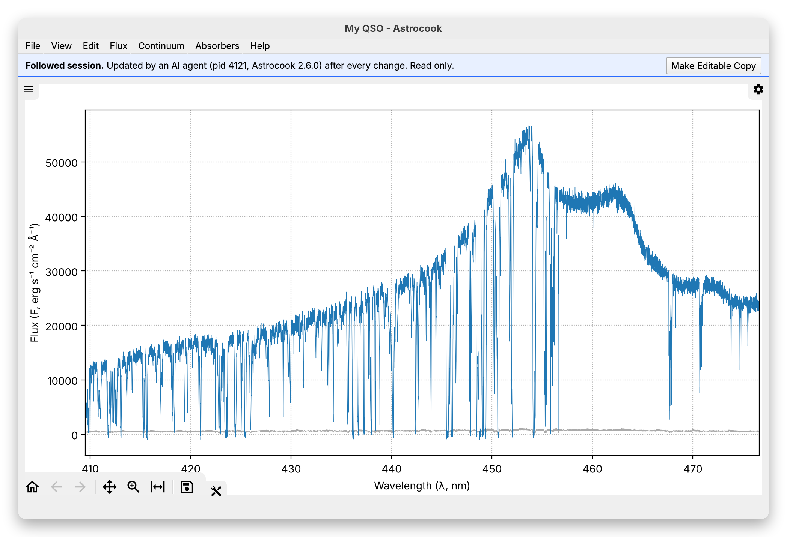

Using Astrocook from an AI Agent#
Warning
The server is being completed: since the pilot every recipe is a tool, and tools to inspect and edit the sessions are coming. Tools, parameters and outputs may change in later versions.
An AI agent, such as Claude Code or the Claude desktop app, can drive Astrocook for you: you ask in plain words (“estimate the continuum and fit the CIV doublets”), the agent calls the Astrocook recipes, reads their results and tells you what it found. You then review its work in the GUI.
The agent talks to Astrocook through the Model Context Protocol (MCP),
an open standard for connecting AI applications to other programs.
Astrocook provides an MCP server: a small program, astrocook-mcp,
that the agent (the client) starts on your computer and that offers it
a list of tools, each a recipe with a description and typed
parameters. Everything runs locally: your data are read from your disk
and stay there, though what the tools return (summaries, not the
spectra) is sent to the AI model, as anything else in the conversation.
1. Installation#
The server is an optional part of Astrocook, installed with the [mcp]
extra (Python 3.12 or later, preferably in a virtual environment, see
Installation):
pip install "astrocook[mcp] @ git+https://github.com/DAS-OATs/astrocook.git"
This also installs the mcp package (the official Python SDK of the
protocol) and the astrocook-mcp command. The macOS app does not include
the server. To run the server in a Docker
container instead, without installing it, see section 2.1.
Find the full path of the command, which the client needs (it does not see your virtual environment):
which astrocook-mcp # On Windows: where astrocook-mcp
e.g. /Users/me/ac2/bin/astrocook-mcp.
2. Registering the Server#
Claude Code (the claude command; if it is not installed, see
its setup page; on macOS and
Linux: curl -fsSL https://claude.ai/install.sh | bash):
claude mcp add astrocook -- /Users/me/ac2/bin/astrocook-mcp
To have it in all your projects, add --scope user before the name
(claude mcp add --scope user astrocook -- ...). claude mcp list
shows the registered servers; in a session, /mcp shows their state.
Claude desktop app: add the server to its configuration file
(Settings > Developer > Edit Config; on macOS
~/Library/Application Support/Claude/claude_desktop_config.json, on
Windows %APPDATA%\Claude\claude_desktop_config.json), then restart the
app:
{
"mcpServers": {
"astrocook": {
"command": "/Users/me/ac2/bin/astrocook-mcp"
}
}
}
Other clients: any MCP client that can start a local server over
stdio works the same way: the command is astrocook-mcp, with no
arguments.
2.1 Running the Server in Docker#
If you would rather not install Python and the packages of Astrocook, the server can run in a Docker container. The image holds the server only, without the GUI (no PySide6, no Qt libraries: it is a small image, not the ~1 GB of the full package), and the client starts it by itself each time. You need Docker and the Astrocook repository.
The image is not published yet (that waits for the license of the software): you build it once, from the folder of the repository:
git clone https://github.com/DAS-OATs/astrocook.git
cd astrocook
docker build -t astrocook-mcp .
The container does not see your disk, only the folders you mount in it
with -v. Choose the folder with your spectra and give it as <data>
(a full path); inside the container it is /data, and the agent must use
/data/... for every path (/data/spectrum.fits, /data/out.acs2).
What the server saves there stays on your disk.
Claude Code:
claude mcp add astrocook -- docker run -i --rm -v <data>:/data astrocook-mcp
Claude desktop app (the configuration file of section 2):
{
"mcpServers": {
"astrocook": {
"command": "docker",
"args": ["run", "-i", "--rm", "-v", "<data>:/data", "astrocook-mcp"]
}
}
}
On Windows write the folder as C:\\Users\\me\\spectra in the JSON file
(backslashes doubled), or C:/Users/me/spectra.
Other clients: the command is docker run -i --rm -v <data>:/data astrocook-mcp. Keep -i (the server speaks over standard input and
output) and do not add -t.
What is different from the installation of section 1:
the tools are the same, and so are the sessions, the log and the history; the recipes run with the same results;
gui_opendoes not work: the container has no display and no GUI, and the tool says so. Ask the agent to save the session (session_save, into/data) and open the archive in Astrocook on your computer, as in section 5, but the GUI will not follow the session as the agent works on it;the file of the gaps (the lacks of the recipes that the server records, see section 3) is
.astrocook-gaps.jsonlin your data folder; theastrocook-gapscommand of an installation reads it with--file;to update, pull the repository and build the image again; the files the agent can reach are only those of the folder you mounted.
3. The Tools#
Every recipe is a tool, named after the recipe, prefixed with its
menu: Continuum > Auto-estimate Continuum is continuum_estimate_auto,
Absorbers > Auto-detect Doublets is absorbers_doublets_auto, and so on
for the menus File, Edit, Flux, Continuum and Absorbers, also the
recipes that the GUI runs from the System Inspector (e.g.
absorbers_fit_component). The tools are made from the same description
of the recipes as the dialogs of the GUI: the same parameters, defaults,
bounds and texts, and a recipe added to Astrocook becomes a tool by
itself. Other tools handle the sessions:
Tool |
What it does |
|---|---|
|
Opens a spectrum or a session file ( |
|
Saves the session as |
|
Lists the open sessions: where each comes from, its spectrum in a few numbers, its history, whether it has changes not saved. |
|
Describes a session: the columns of the spectrum, the components per series, the log that came with the file. |
|
Lists the states of a session: as opened, then one per recipe, with its parameters and what it changed. |
|
Go back to the state before the last recipe (or several), and forward again, as Edit > Undo and Redo in the GUI. |
|
Makes a copy of a session, with its history and log, to try something without touching the original. |
|
Closes a session; refuses if it has changes not saved, unless asked to discard them. |
|
Writes a note in the session log, at the current state: what the agent did or decided outside the tools; with |
|
Writes the session log as the text of a methods section, in English (see “The log as text” below). |
|
Summarizes, grouped, the gaps recorded in your local file (see “Gaps” below). |
Three tools let the agent look into a session, without changing it:
Tool |
What it does |
|---|---|
|
The absorption components, by redshift, with their errors, the reduced chi2 and flags of their last fit, their fit group (the components fitted together, as Refit All groups them), their velocity from the first of the group and their constraints (fixed or linked parameters); filters by series, redshift and flags, in pages. |
|
The columns of the spectrum in a range, as numbers; a long range is averaged in blocks of pixels (for reading only). |
|
A plot of a range (PNG): the flux and its error, the continuum, the model, and a tick at each line of each component. |
And one shows a session to you, in the GUI:
Tool |
What it does |
|---|---|
|
Opens a session in the Astrocook GUI, on the computer where the server runs, and keeps it up to date after every change (see “Watching the agent in the GUI” below). |
Nothing is lost. Every state of a session is kept, as in the GUI: if
a recipe removes components (e.g. Auto-detect Doublets replaces those
on the red side), its result says so, with the reason for each, and
session_undo brings them back without running anything again. The log
follows the state: a session saved after an undo replays without the
recipe undone.
Every recipe tool takes the session_id of the session to run on, the
parameters of the recipe, and:
provide_missing: see “What a recipe needs” below;max_listed: the maximum number of items in each list of the output;reason: why the agent runs the recipe with these values, stored with the step in the session log.
The agent’s decisions in the log. The log is what you read when you
review the work of an agent. Besides the recipes and their parameters, it
holds the reason the agent gave for each recipe and the notes it wrote
with session_note: what it did outside the tools (e.g. “z_em = 2.345
from the peak of Ly-a, measured on the flux with my own code”), or what it
saw. The instructions of the server ask the agent for both. A note is not
a step: it makes no new state, the replay of the log skips it, and it is
undone with the state it was written at. session_history shows the
reason of each recipe and the notes of each state.
The log as text. session_methods writes the log of a session as the
text of a methods section, ready to paste in a paper, as File > Export Log
as Text does in the GUI: one paragraph per recipe, with the reason the
agent gave, what the recipe did (its parameters, the works it relies on),
what it changed and the notes written there; then the fit, the sources of
the atomic data of the transitions fitted, and the references. The recipes
undone are left out; menus=false leaves out the menus of the GUI that
follow each recipe. The text is made by Astrocook from the log, not by the
agent: the same log gives the same text. So the reasons and notes are the
only words of the agent in it: the instructions of the server tell the
agent so.
Gaps. A gap is something the analysis needed and no recipe provided:
the list of the gaps is where to direct the work on the recipes. Two
sources. The agent declares one (session_note with kind="gap": what
was needed and what it did instead, e.g. “Needed z_em: no recipe
estimates it; measured the peak of Ly-a on the flux with my own code”)
every time it works outside the tools; the instructions of the server ask
for it. The server sees three kinds by itself: a prerequisite that no
recipe estimates from the data (z_em and the resolution: they must be
given), a tool that failed with an unexpected error on a valid request
(not a wrong parameter, not a failure with a reason that the agent can act
on), and a recipe whose result the agent undid with session_undo (which
takes an optional reason: why). The gaps are kept with the session, in
its log (the notes of kind gap and gap_seen, shown as # gap: in the
Log Scripter), and appended to a file on your computer, one JSON line
each: date, version, kind (declared, prerequisite, failed,
undone), text and the name of the session; nothing else of yours, and
the file is never sent anywhere. It is here:
System |
File |
|---|---|
macOS |
|
Linux |
|
Windows |
|
Set the environment variable ASTROCOOK_GAPS_FILE to another path to move
it, or to off to record nothing. The command astrocook-gaps (options
--since YYYY-MM-DD, --kind, --json, --path) and the tool
gaps_summary summarize the file, grouped by kind and text.
It returns the session after the call (the spectrum in a few numbers, the
number of log entries), what the recipe did in one line (summary) and
what else is worth knowing (notes), the warnings, and what changed,
listed: the components removed (with the reason, when the recipe gives
one) and changed, the columns and properties of the session. Some results
add a summary of their own: the continuum and the absorbed pixels after a
recipe that makes a continuum, the regions and candidate systems after an
identification, the new components (with errors, reduced chi2 and flags)
after a fit.
A recipe that opens new sessions in the GUI (e.g. Edit > Split, or
Absorbers > Identify Absorption Lines) does so here too: the session it
runs on does not change, and the result lists the new ones, each with its
session_id, named after the original (J0103-1305-1, …). A parameter
that names another open session (e.g. the reference of Flux > Equalize)
takes its session_id.
Progress. A recipe can take minutes. A client that asks for progress
(the MCP progress token; most clients do for long calls) receives
notifications while the recipe runs: the pipelines and the Bayesian fit
report a percentage with the last line of their log (what the GUI shows
under its progress bar), and every recipe, also those that report nothing
in between, sends one notification when it starts and one when it ends,
with the time it took. A recipe that reports nothing for 20 seconds sends a
heartbeat (“Still running …”, with the time elapsed), so that a long
recipe is not mistaken for a hang. While a recipe runs, the tools that read
a session (session_list, session_history, components_list,
spectrum_plot, …), session_note and session_save still answer, on
the state before the recipe (session_list says what is running); the
other recipes and the tools that change the states wait for it to end.
Watching the agent in the GUI. When the agent calls gui_open on a
session, the Astrocook GUI opens on it, and after every change of the
session (a recipe, an undo or redo, a note) it shows the new state: you
see the analysis as it goes. The view stays as you left it: the range and
zoom of the plot, the System Inspector open with its selected row, the
session shown. A banner over the plot says that the session is
followed: it is read only in the GUI, so that you and the agent do
not change it at the same time; nothing you do in the GUI reaches the
agent. The recipes that change it, the continuum editor, Undo and Redo,
the scripts and renaming are refused, with the offer of an editable copy;
Make Editable Copy in the banner makes one: a new session with the
current state and the log of the agent (its reasons and notes), which you
can change, and which the agent does not see or change. Saving, exporting
and the recipes that open a new session (e.g. Edit > Split Out Region)
work as for any session; their new sessions are yours. When the agent
closes the session, or the client stops the server, the banner says that
the session is no longer followed.

The GUI is launched as the application on macOS (open -a Astrocook, if
it is installed in /Applications or ~/Applications), else with the
astrocook command; if it is already open, the session is added to it.
The sessions that a recipe opens later are not followed: the agent calls
gui_open on them if you should see them. Without a display (e.g. the
Docker image, or a Linux server reached by SSH) the tool says that the GUI
is not available. The GUI must be a version that knows followed sessions
(the one with this server, or later): an older application opens the
archive as an ordinary session, not updated.
How it works, for the curious: the server saves the session to an archive
in a temporary folder of its own, with a small file next to it
(<archive>.follow.json) that says it is followed, and saves the archive
again after every change; the GUI watches the file and reloads it. The
archive is replaced only when it is complete (written to a temporary file
next to it, then renamed), so the GUI never reads it half written. This
archive is not your save: save the session with session_save as usual.
File > Export to ASCII (file_export_ascii) writes the files in the
folder path, named after prefix, and does not replace files that exist
unless asked (overwrite=true).
The sessions live in the server while the client is running: save the
result with session_save before closing the client.
4. An Example#
A request like this one:
Open
/data/J0103-1305.acs2, with z_em = 4.072 and R = 45000. Estimate the continuum, fit the metal doublets on the red side, and save the result as/data/J0103-1305_agent.acs2. Which components are not reliable?
leads the agent to call session_open, continuum_estimate_auto,
absorbers_doublets_auto and session_save in turn. Each call returns
a structured summary, for instance (from continuum_estimate_auto):
"continuum": {
"absorbed_fraction": 0.648,
"absorbed_fraction_forest": 0.862,
"absorbed_fraction_red": 0.207,
"snr_median": 29.6
}
and, from absorbers_doublets_auto, the number of components added and
removed and the list of the new ones, each with its flags (e.g.
b_at_lower_bound), from which the agent answers the last question.
Each result also says what the recipe did in one line (summary) and
what else is worth knowing (notes): the components removed and why,
those whose fit failed, the steps run first.
If something goes wrong (a missing file, a value that cannot be used), the tool returns Astrocook’s error message, which names the recipe and the reason, and the agent can usually correct its request by itself.
What a recipe needs. A recipe that needs something the session does
not have (the emission redshift, the resolution, a continuum) does not
run: the tool says what is missing and which recipe provides it, and the
agent decides. z_em and the resolution are given to session_open or
edit_set_properties. A
continuum is made with continuum_estimate_auto, or, if the agent calls
the tool again with provide_missing=true, with the default parameters of
Auto-estimate Continuum before the recipe: the step is listed in
provided and recorded in the session log, before the recipe, as if it
had been run on its own.
5. Reviewing the Result in the GUI#
Open the saved archive in the GUI (astrocook /data/J0103-1305_agent.acs2),
or ask the agent to show you the session while it works (gui_open, see
“Watching the agent in the GUI” above).
The session log (View > View Session Log) lists, at the top, the recipes
the agent ran, with their parameters, as if you had run them from the
menus, with the reasons the agent gave (# reason: ..., before each recipe)
and its notes (# note: ..., where it wrote them), all as comments starting
with ##: the log of the archive, for reading. The archive is a step of the
analysis (see Getting Started, “Saving and Closing”): opened, the state the
agent left is the new starting point, and the log of what you do starts
below, empty. You can inspect the components in the System Inspector,
correct them and refit them; Run All reruns your steps, not the agent’s,
and saving the session saves your steps only. Keep the agent’s archive, or
its text from session_methods, if you need its path later. An analysis by
an agent is best done in one session; if it must be resumed, ask the agent
to keep its own log (e.g. the text of session_methods).
6. Limits of the Pilot#
Paths are on the computer where the server runs; give them in full.
absorbers_doublets_autoreplaces the components already on the red side. It finds the absorbed regions on a new mask made with the default parameters (mask="new", used only inside), or on the mask of the session (mask="session", e.g. that ofcontinuum_estimate_autowith other parameters). A call can take minutes on a large spectrum.The recipes are the same as in the GUI, with the same strengths and weaknesses: check the results.